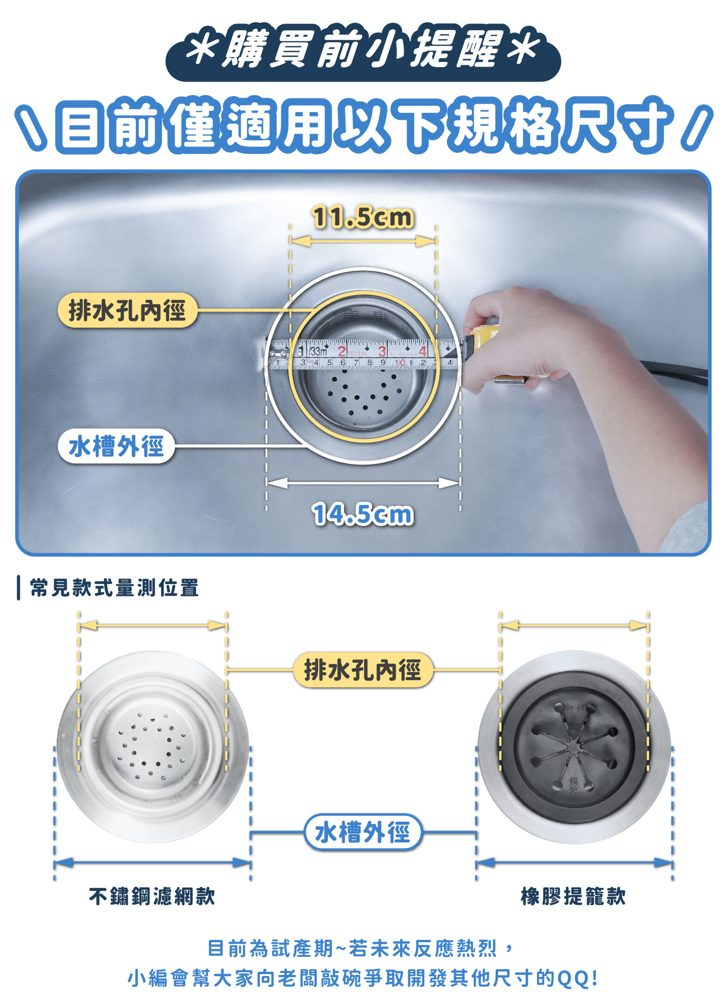

STEP 1
30 秒快速確認尺寸
你家的濾籃，長得像哪一個？
把水槽裡的濾籃拿起來看一下，點最像的那一組。
STEP 2 · 台式再確認尺寸
量一下渣籃的直徑是多少？
把濾籃拿起來，尺放在最上緣的翻邊外緣，量最寬處，像下圖這樣。
或直接輸入
cm
直接量尺寸
量一下，馬上知道
快排濾網適用排水孔內徑 11–11.5 cm（水槽外徑約 14.5 cm）。依你家的情況擇一量：
A 有籃子拿得起來：尺放在籃口最上緣的翻邊外緣，量最寬處。
B 沒有籃子：直接量水槽排水孔的內徑（金屬杯口內側）。

cm
判斷結果與你家的實際情況不符？來訊息問小編